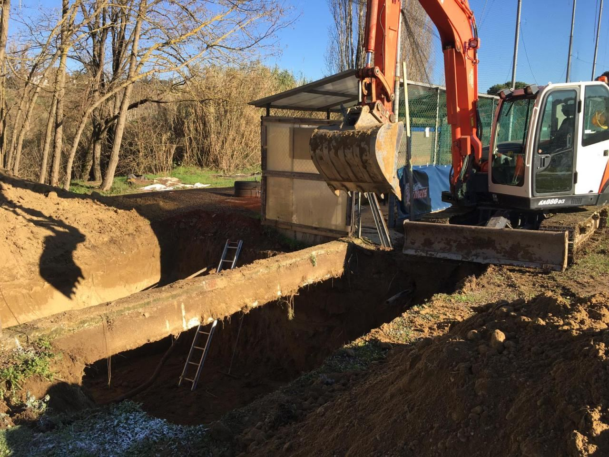

Questo primo lotto fa parte di un progetto più ampio che speriamo nel corso di pochi anni porti ad una completa illuminazione di tutto l’impianto di Via Livornese, sede dei Lancers Baseball Lastra a Signa.
La società è impegnata da anni alla progettazione di quest’opera, le prime e-mail risalgono addirittura al 2015; opera che risponde correttamente a tutti i requisiti che la Federazione Italiana Baseball & Softball richiede in materia di omologazione per gare in notturna.
Oggi non saremmo qui a parlare di questo storico traguardo che la nostra società ha raggiunto se non fosse per il Vice Presidente Gabriele Nerbini che da anni, assieme al presidente Moretti, segue con estrema dedizione, cura e pazienza tutte le fasi burocratiche ed amministrative.
In questa prima fase è giusto anche ricordare, e ringraziare, lo storico Lanciere Jacopo Vannuzzi, impegnato in prima linea su questo progetto.
Ma oltre le idee e la passione che abbiamo dedicato quest’opera non sarebbe mai stata realizzata senza le risorse ed il volere del comune di Lastra a Signa.
A questo proposito ci preme ringraziare il sindaco Angela Bagni ed il suo vice Leonardo Cappellini, che in prima persona si sono impegnati a far sì che questo nostro sogno diventasse realtà.
Infine l’ultimo grazie va alla società Iride Srl, gestrice dell’impianto, per il suo consenso.
La fine dei lavori è prevista entro il mese di Febbraio 2019, speriamo quindi al ritorno sul campo a Marzo, di provare la gioia di un vero allenamento in notturna , non prima di un grande brindisi insieme a tutti i nostri tesserati e le istituzioni.
Buon Natale…e luce fu!